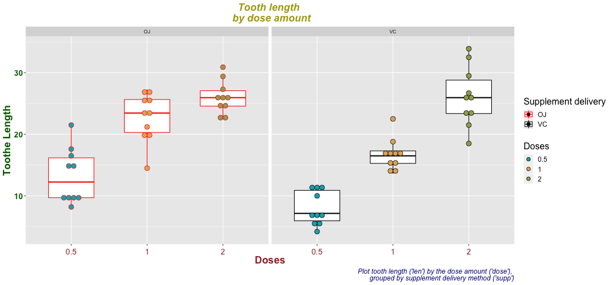

This presentation aims to study a data set from R : ToothGrowth.
It's cover :
This work could be completed (of more slides are allowed) by :
data(ToothGrowth)
str(ToothGrowth)
## 'data.frame': 60 obs. of 3 variables:
## $ len : num 4.2 11.5 7.3 5.8 6.4 10 11.2 11.2 5.2 7 ...
## $ supp: Factor w/ 2 levels "OJ","VC": 2 2 2 2 2 2 2 2 2 2 ...
## $ dose: num 0.5 0.5 0.5 0.5 0.5 0.5 0.5 0.5 0.5 0.5 ...
library(tidyr)
library(rstatix)
##
## Attachement du package : 'rstatix'
## L'objet suivant est masqué depuis 'package:stats':
##
## filter
ToothGrowth %>% sample_n_by(dose, size = 3)
## # A tibble: 9 × 3
## len supp dose
## <dbl> <fct> <dbl>
## 1 7 VC 0.5
## 2 10 OJ 0.5
## 3 11.5 VC 0.5
## 4 15.2 VC 1
## 5 14.5 OJ 1
## 6 21.2 OJ 1
## 7 23.6 VC 2
## 8 23 OJ 2
## 9 24.5 OJ 2
# Quick summary of the data
summary(ToothGrowth)
## len supp dose
## Min. : 4.20 OJ:30 Min. :0.500
## 1st Qu.:13.07 VC:30 1st Qu.:0.500
## Median :19.25 Median :1.000
## Mean :18.81 Mean :1.167
## 3rd Qu.:25.27 3rd Qu.:2.000
## Max. :33.90 Max. :2.000
# Exploration of ToothGrowth$dose and ToothGrowth$len, since we know exactly what ToothGrowth$supp contains
unique(ToothGrowth$dose)
## [1] 0.5 1.0 2.0
unique(ToothGrowth$len)
## [1] 4.2 11.5 7.3 5.8 6.4 10.0 11.2 5.2 7.0 16.5 15.2 17.3 22.5 13.6 14.5
## [16] 18.8 15.5 23.6 18.5 33.9 25.5 26.4 32.5 26.7 21.5 23.3 29.5 17.6 9.7 8.2
## [31] 9.4 19.7 20.0 25.2 25.8 21.2 27.3 22.4 24.5 24.8 30.9 29.4 23.0
library(ggplot2)
my_plot_fun <- function(my_data,my_x) {
my_data <- as.data.frame(my_data)
my_data %>%
ggplot(aes(x=my_x, y=len)) +
theme(plot.title = element_text(color="#ADA717", size=18, face="bold.italic",hjust=0.5),
axis.title.x = element_text(color="#993333", size=18, face="bold"),
axis.text.x = element_text(color="#993333", size=14,vjust = 0),
axis.title.y = element_text(color="darkgreen", size=18, face="bold"),
axis.text.y = element_text(face="bold", color="darkgreen", size=14),
legend.text = element_text(size=12),
legend.title = element_text(size=16))}
# Conversion of ToothGrowth$dose into a factor
ToothGrowth$dose<-as.factor(ToothGrowth$dose)
mpt <-my_plot_fun(ToothGrowth,my_x = ToothGrowth$dose) +
geom_boxplot(aes(color = supp,group=dose), width = 0.6) +
geom_dotplot(aes(fill = as.factor(dose), color = supp,group=dose), binaxis='y', stackdir='center',
dotsize = 0.8,position = position_dodge(0.8),binwidth=1)+
scale_fill_manual( values = c("#00AFBB", "#E3B166","#A1A861"))+
scale_color_manual(values = c("red", "black")) + facet_grid(~ supp)+
labs(x = "Doses", y ="Toothe Length", fill = "Doses", color="Supplement delivery",
title = "Tooth length \n by dose amount",
caption = "Plot tooth length ('len') by the dose amount ('dose'), \n grouped by supplement delivery method ('supp')") +
theme(plot.caption = element_text(color = "darkblue", face = "italic", size = 12))
mpt
